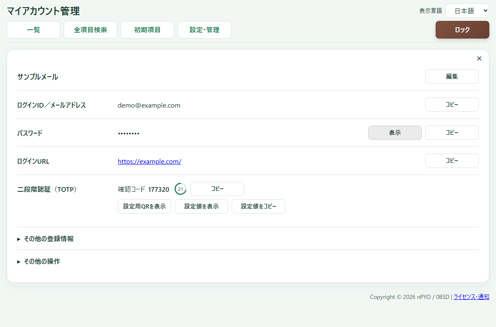
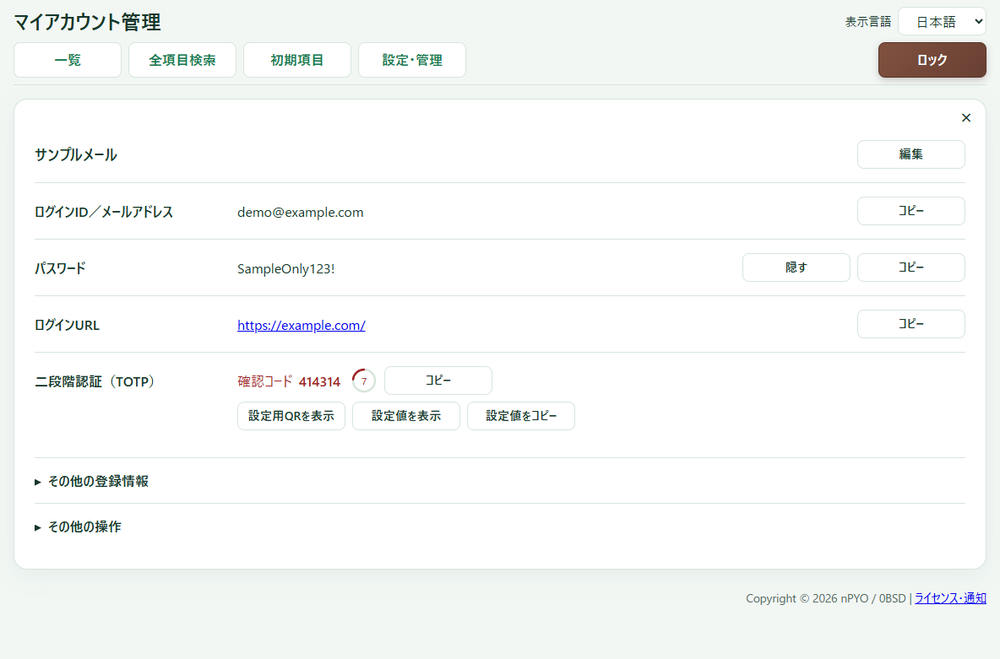
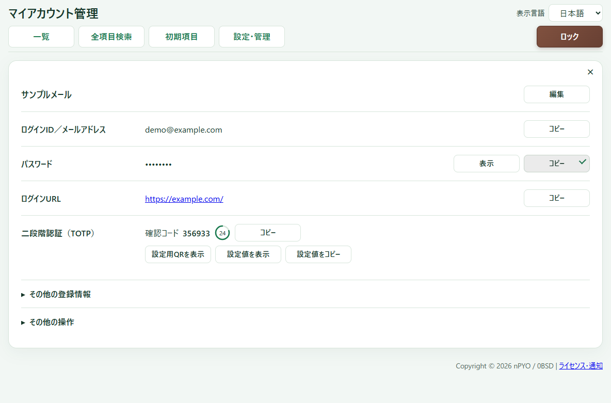
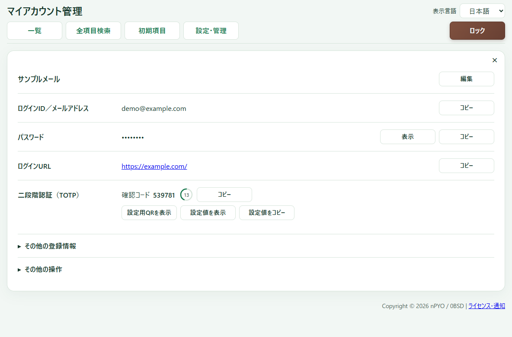
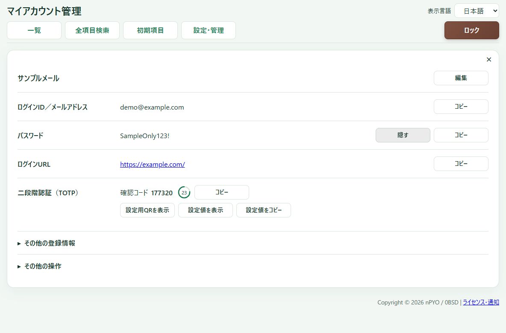

10パスワードの表示とコピー
パスワードは必要なときだけ表示し、コピーできます。
手順一覧を開く（6手順）
- ［表示］を押す
- 内容を確認
- ［コピー］を押す
- 自動で伏字に戻る
- 自分で伏字に戻す
- 手動で隠れたことを確認
1［表示］を押す
パスワード行の［表示］を押します。

伏字状態の例。パスワード行の［表示］を押します。2内容を確認
表示中はボタンが［隠す］に変わります。

表示後：説明専用の架空パスワードが見えています。3［コピー］を押す
パスワード行の［コピー］を押し、チェック表示を確認します。

コピー直後：パスワード行のボタンにチェックが表示されます。4自動で伏字に戻る
詳細のパスワード表示は約20秒で自動的に伏字へ戻ります。

自動再マスク後：表示開始から約25秒後に撮影。5自分で伏字に戻す
表示中に［隠す］を押せば、待たずに伏字へ戻せます。

操作前：［隠す］ボタンが表示されています。6手動で隠れたことを確認
パスワードが伏字となり、ボタンが［表示］に戻ります。
手動再マスク後：パスワードは伏字です。